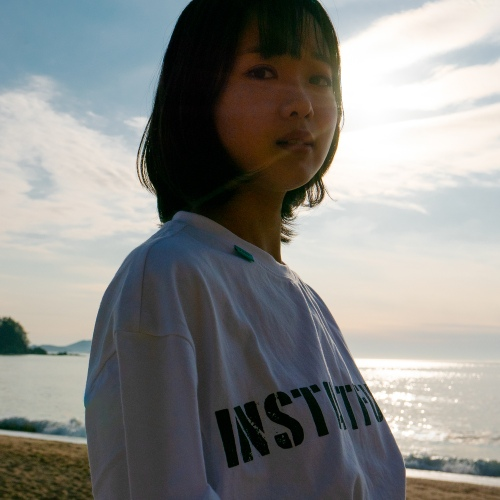

입춘(立春)은 스물넉 점의 절기 중 첫 번째, 봄이 선다는 뜻입니다. 그런데 정작 입춘의 날씨는 한겨울입니다. 눈이 그대로 쌓여 있고 바람도 아직 찹니다. 그럼에도 이날부터 봄이라고 부르기로 한 것이 절기의 약속입니다. 바뀐 뒤에 이름을 붙이는 것이 아니라, 이름을 먼저 붙여 두고 기다리는 방식.
데뷔곡의 제목으로 이보다 정확한 단어는 없을 것입니다. 아직 아무것도 증명되지 않은 자리에서, 그래도 여기서부터가 시작이라고 스스로 못을 박아 두는 일. 2022년 3월의 한로로는 국어국문학과에 재학하며 첫 곡을 막 내놓은 신인이었습니다. 이후의 〈이상비행〉도, 〈집〉도, 〈자몽살구클럽〉도 아직 없던 때입니다.
표지도 같은 말을 합니다. 역광으로 선 바닷가, 아직 푸른 하늘과 물 위로 부서지는 금빛. 겨울 바다인지 봄 바다인지 알 수 없는 시간대입니다. 이 페이지가 입고 있는 푸른 새벽과 금빛은 그 사진에서 뽑은 색이고, 사이트 전체의 밤 화면도 같은 발상 — 아직 어두운데 이미 봄이라고 부르는 배색입니다.
그래서 이 곡은 뒤의 세 앨범과 성격이 다릅니다. 서사가 있는 앨범이 아니라 서사가 시작되는 지점입니다. 얼어붙은 것이 녹기를 기다리는 마음 하나로 서 있는 노래고, 그 기다림이 이후 3년의 작업 전체를 관통합니다.
여기서 EP 세 장과 싱글 한 장이 나왔습니다.